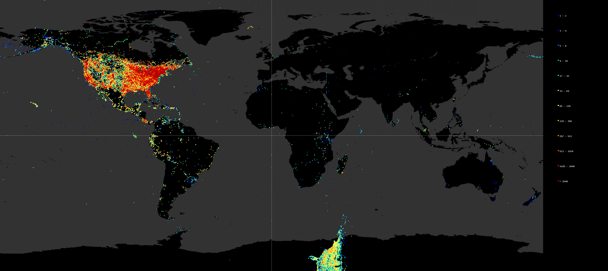
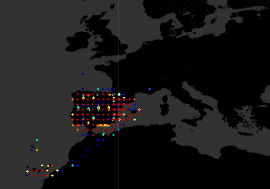

Biodiversity Datasets Assessment ToolDEPT. ZOOLOGY AND ECOLOGY |

Use Cases
We present some exemplar situations where these visualizations can help in detecting issues or biases in the key primary aspects of biodiversity data affecting part or entire collections.
- Geospatial issues
- Coordinate swap
- Coordinate imprecission
- Temporal issues
- Default values in mandatory fields
- Figure movement or dissappearing
- Taxonomic issues
- Unmappable kingdom values
- Wrong taxonomic hierarchy
- Metadata issues
- Potential of improvement
- Particular collections driving full publisher's data
Page under construction
Geospatial issues
Coordinate swap
Coordinate swaps happen when latitude value is inserted in the longitude field and vice versa. This type of geospatial issue is fairly easy to detect when the original record has its longitude absolute value larger than 90 (since it is impossible for a record to be taken at latitudes higher than 90 N/S). But it becomes trickier when both values (latitude and longitude) are smaller than 90. In this case, a generic record-by-record check would not detect the problem, but when the full collection is represented with a density map, the wrong records stand out of the rest of the potentially clean records. Then, detecting the records in the owner's database is easy: it is enough with selecting those who fall inside a bounding box with negative latitude and positive longitude. See image below:

Coordinate imprecission
Sometimes

Temporal issues
Default values in mandatory fields
Figure movement (197 instead of 1975)
Taxonomic issues
Unmappable kingdom values
Wrong taxonomic hierarchy
Metadata
Potential of improvement
Particular collections driving full publisher's data